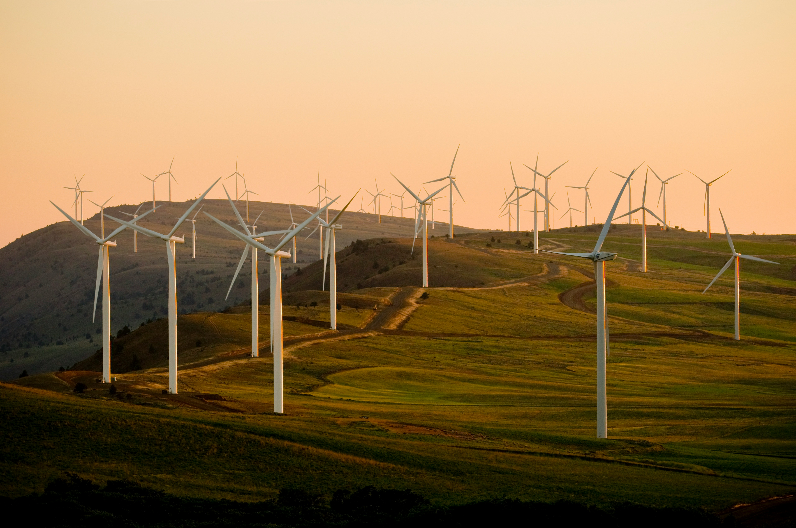

Exigir políticas públicas e apoiar marcas sustentáveis
Cobrar medidas ambientais severas dos governantes e optar por empresas que possuem compromisso real com a sustentabilidade impulsiona mudanças estruturais na sociedade e na indústria.

Expansão massiva das energias renováveis
A transição para fontes limpas, como a energia solar e a eólica, já está substituindo a dependência dos combustíveis fósseis na geração de eletricidade ao redor do mundo.